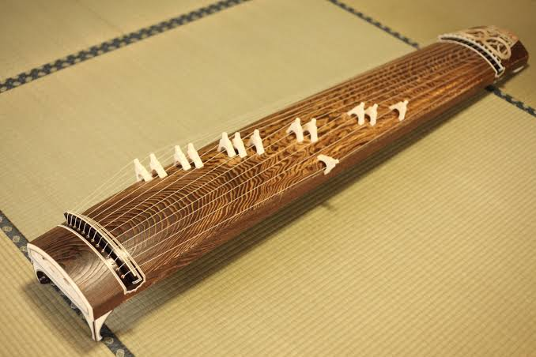
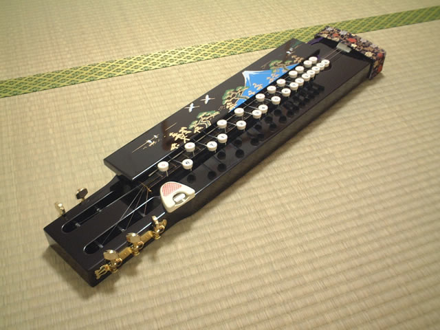
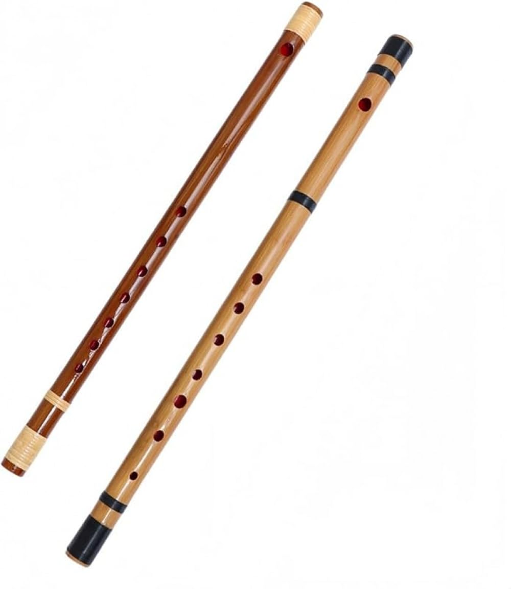
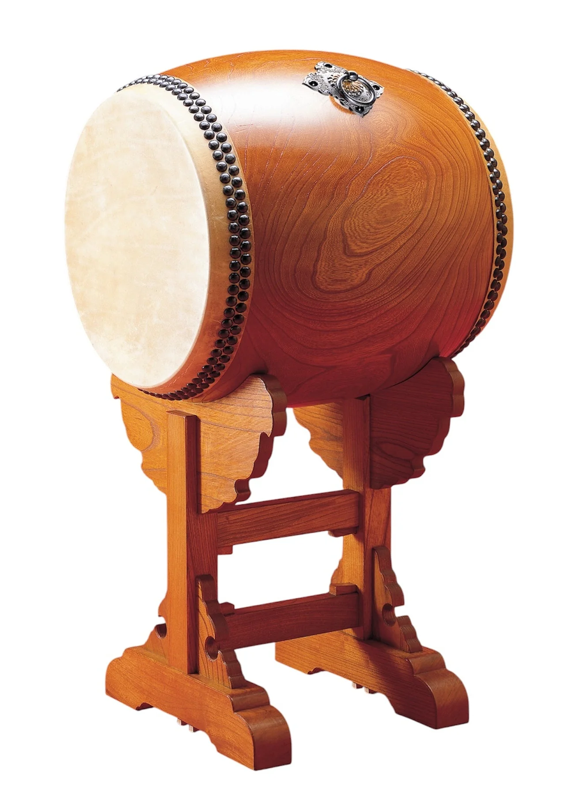

{kind=link}
{kind=link}
写真を掲載予定
演奏活動
グループホームでの演奏
地域のグループホームを訪問し、琴や尺八などの音色で、ご利用者の皆さまと楽しいひとときを過ごしました。
About
和の響は、琴、大正琴、尺八、篠笛、パーカッションなど、日本の伝統楽器を中心に演奏活動を行っている音楽グループです。
地域の皆さまに、日本の伝統的な音色を身近に楽しんでいただけるよう、グループホームや地域イベントなどで演奏しています。落ち着いた和の響きが、会場にやさしい時間をお届けできれば幸いです。
Activities
施設や地域の場で、和の音色をお届けしています。
写真を掲載予定
演奏活動
地域のグループホームを訪問し、琴や尺八などの音色で、ご利用者の皆さまと楽しいひとときを過ごしました。
写真を掲載予定
地域イベント
第21回野田市ふれあいハートまつりにて演奏を行い、訪れた皆さまに日本の伝統楽器の響きをお届けしました。
写真を掲載予定
演奏活動
野田市産業祭にて、親しみやすい曲と落ち着いた和の調べを織り交ぜたプログラムで演奏しました。
Instruments
日本の伝統楽器を中心に、温かみのある合奏をお届けします。

写真を掲載予定
十三弦の箏。澄んだ高音から深い低音まで、心をほどくような広がりのある響きが特長です。

写真を掲載予定
親しみやすい音色の撥弦楽器。旋律をやさしく支え、聴く人の記憶に残るメロディを奏でます。

写真を掲載予定
竹の縦笛。息づかいがそのまま音になる、奥行きのある響きで、場の空気をそっと整えます。

写真を掲載予定
祭や民謡でも親しまれる横笛。明るく通りのよい音色が、合奏に彩りを添えます。

写真を掲載予定
太鼓などの打楽器。穏やかなリズムで演奏を支え、会場に温かみと一体感をもたらします。
Practice
毎月第2日曜日と第4日曜日に活動しています。
カレンダーの金色の日が、活動日の目安です。
Contact
和の響では、地域のイベントや施設などでの演奏依頼を承っています。
琴、大正琴、尺八、篠笛、パーカッションなどによる、和の音色をお届けします。
演奏についてのお問い合わせは、お気軽にご連絡ください。
{kind=link}
{kind=link}
{kind=link}
{kind=link}
{kind=link}
{kind=link}